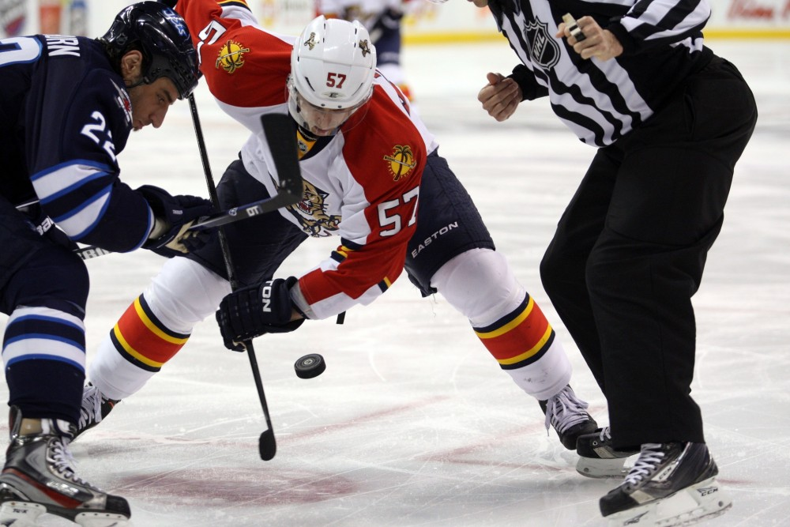
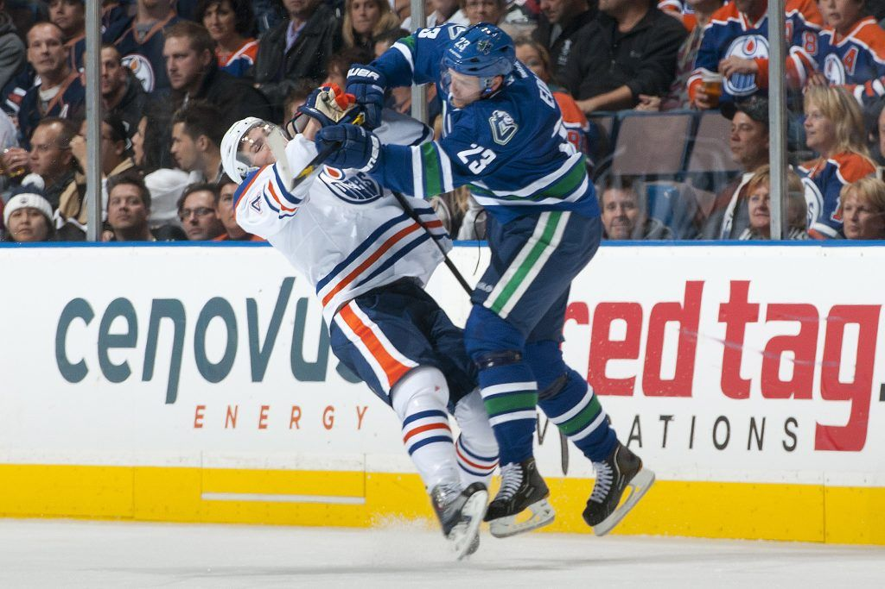
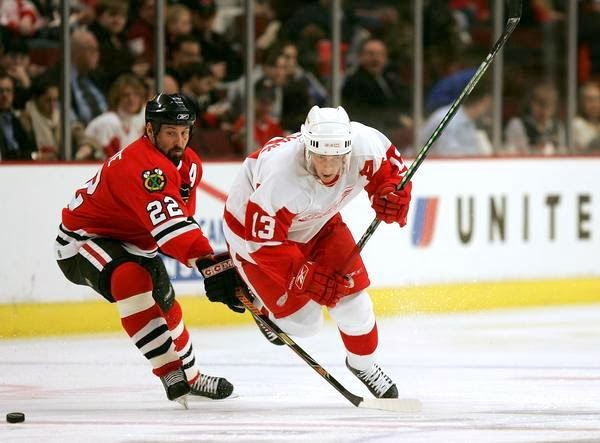
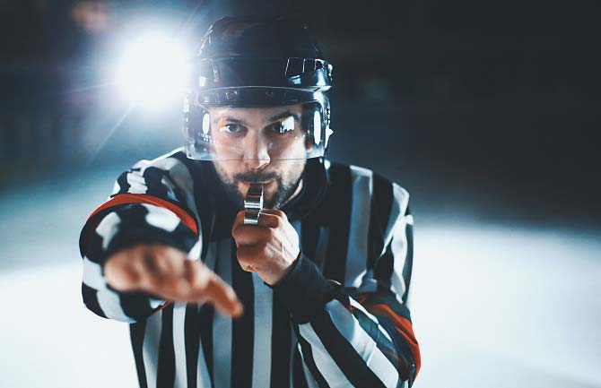

Understanding Hockey
A guide to watching Hockey for newcomers.
Game Objective
- The main objective is to propel a small puck across the ice and score by shooting it into the opponent’s goal using a hockey stick.
- Each successful goal earns one point for the team. Players pass the puck among themselves, while the opposing team aims to prevent scoring.
- The team with the most goals at the end of the game wins.
- In case of a tie, overtime play determines the winner, with the first team to score securing victory
Game Structure
Teams
Each team can have up to 20 players, including two goaltenders, but only six players can be on the ice simultaneously. Substitutions are allowed at any time during the game.Duration
The game consists of three periods, each lasting 20 minutes. The period length varies based on the level of play. The clock stops whenever play halts, emphasizing the importance of every second.Playing Zones
The hockey rink features red and blue lines. The red center line divides the ice into halves, while the blue line separates it into three zones: defending, attacking, and neutral.Officiating
The referee, identified by a red armband, oversees the entire game and makes final decisions. Linemen handle offside calls, and goal judges determine if the puck crossed the goal line.
General Play


Faceoffs
The game starts with a faceoff in the center circle. The referee drops the puck between opposing players, who battle for position. Faceoffs also resume playafter stoppages in attacking or defending zones
Physical Play
Players can use physical force to win the puck. Body checking is allowedbut not above shoulder height or from behind.
 
Penalties
Minor penalties last two minutes, during which the penalized player leavesthe ice. If the opposing team scores, the player can return immediately.
Minor penalties include tripping, holding, hooking, and body checking
without the puck. Major penalties result in a player’s removal for up to 5
minutes and may involve fighting or serious injury.